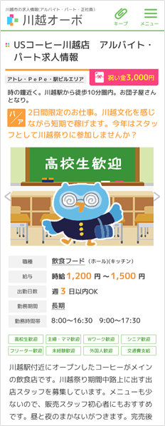

川越オーボに載せる 3つの理由
- 選べる3つの掲載プラン
- 川越市の求人に特化
- スピード掲載・簡単登録
採用のお悩みやプランに悩んだらご相談ください。 03-5909-3097 （平日10：00～17：00）
掲載お申込みフォーム （24時間メール受付）川越市内の求人情報掲載。 川越市に特化
川越オーボは、「埼玉県」ではなく「川越市」に特化しています。
川越エリアの人材採用ニーズにこたえる川越地域密着型求人サイトです。
全国区のサイトで埋もれがちだった求人情報も川越オーボにご掲載いただければ、
川越市で働きたい求職者に確実にお届けします。
川越OBOお仕事エリアマップ
オーボは独自のお仕事エリア設定により、地域性の高い求人情報を簡単に見つけることができます。

[８つの地域エリア]
[４つの特別エリア]
- クレアモール・丸広
エリア - アトレ・PePe・駅ビル
エリア - 蔵のまち一番街
エリア - 川越工業団地
エリア
ウェブ対策+地域密着プロモーション 採用につながる集客
掲載いただいても求職者が集まらなければ意味がありません。川越オーボは他サイト運営での経験を活かした集客ノウハウにより検索時の上位表示や、地域密着サイトならではの広告やプロモーションを活用し川越で働きたい人たちをしっかりと川越オーボへ誘導してまいります。
空いた時間でいつでも求人情報を登録。 簡単登録・スピード掲載
実際にご掲載頂く皆様が操作する部分「管理画面」もユーザビリティにこだわり、求人情報を手間なく簡単にご登録できるようこだわりました。また、川越オーボは人が欲しくなったらすぐに掲載準備をスタートできます。掲載を開始する日もご自身できめていただけるので求人採用サイトの締め切りスケジュールに追われることもありません。
掲載までの流れ
サイトイメージ
- TOP
ページ -
スマートフォン パソコン
- 求人詳細
ページ -
スマートフォン パソコン
川越OBOオリジナルキャラクター「オーボくん」が求人情報を紹介する明るいイメージのサイト。
管理画面から登録した内容をPCとスマートフォンにユーザビリティを意識した見やすい求人情報にして求職者へお届けします。
採用のお悩みやプランに悩んだらご相談ください。
03-5909-3097 受付時間 10時～17時（土日祝日を除く）
お問合せフォーム （24時間受付）掲載Ｑ＆Ａ
プランについて
- 掲載プランが決まらない。
- 一度お問い合わせください。
ご納得がいただけるまで、疑問点やお悩みにお付き合いさせていただきます。
- 掲載プランが決まらない。
- 一度お問い合わせください。
ご納得がいただけるまで、疑問点やお悩みにお付き合いさせていただきます。
私たちができる小さなプロジェクトが大好きな「川越」にすこしでも貢献できるように
川越地域の為にできることを小江戸基地より発信していきます。
川越オーボは「川越で働きたい人」「川越市で営む人」のための求人サイトです。
川越オーボをご利用頂くことで、川越市の地域活性化に繋げていきます。
川越OBOは、川越地域に特化したお仕事の募集情報を掲載しています。【川越市】に限定したアルバイトやパート、正社員のお仕事情報のみを掲載しているのでこの地域で働きたい人へピンポイントでアプローチできます。より最新の川越求人情報を提供できるように、松江町に事務所をかまえています。ご掲載を希望する企業やお店への掲載サポートも敏速に対応できます。川越地域の人材確保にお困りでしたら是非お気軽にご相談ください。